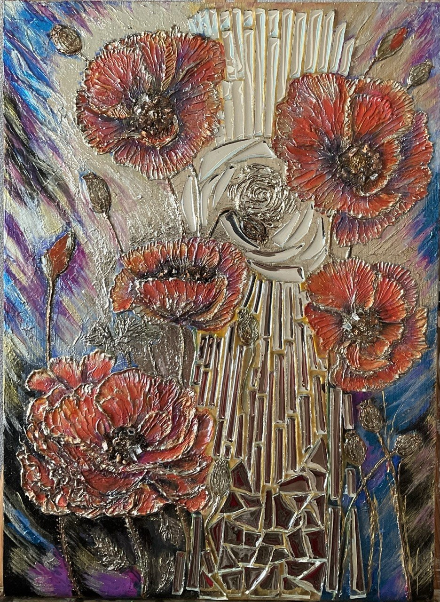

Яркое и эмоциональное полотно с изображением маков.
35х48 см.
35х48 см, текстурная паста, акрил, зеркальная мозаика, поталь, стекл.крошка, заливка зеркал эпоксидной смолой, лак.
Выполнена в сложной технике барельефа (текстурной пасты) с использованием мозаичных элементов зеркал, потали и насыщенных контрастных цветов.
Композиция построена на мощном контрасте. В центре картины вертикальные светлые линии зеркал и золотые элементы напоминают потоки солнечного света, падающие сверху. Огненно-красные бутоны впитывают это сияние, вспыхивая теплыми оттенками на фоне глубоких сине-фиолетовых, сумеречных красок по краям холста.